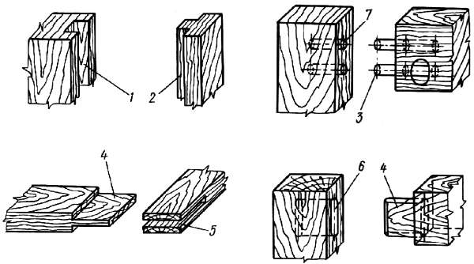
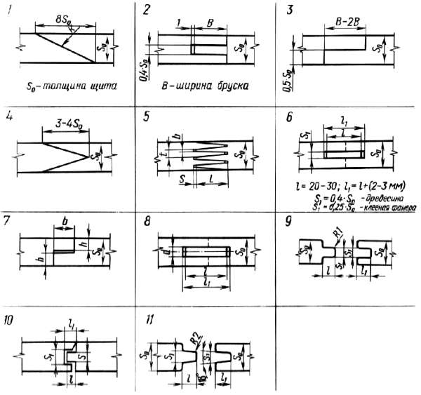
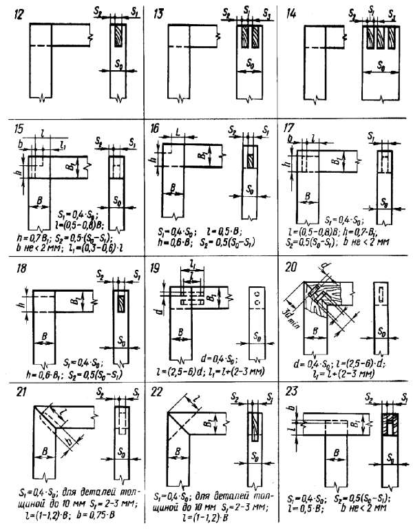
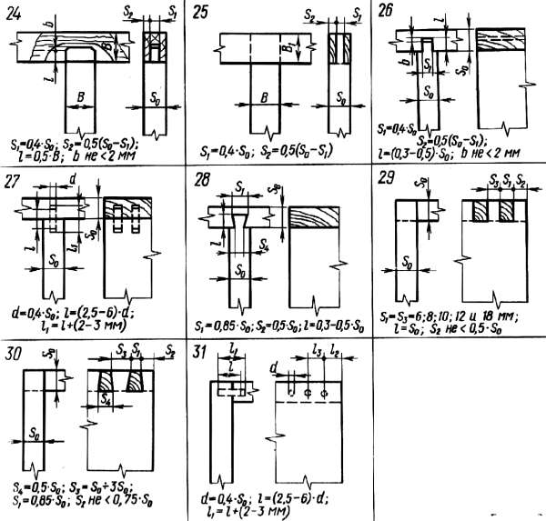
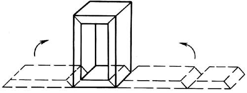

Неразъемные соединения.

Самой распространенной группой среди неразъемных соединений являются соединения с помощью клея. Клеевые соединения имеют ряд положительных качеств: они технологичны, имеют высокую прочность, повышают формоустойчивость изделия, снижают вероятность растрескивания деталей.
Рассмотрим шиповые соединения. Основные элементы шиповых соединений: шип, гнездо, проушина, шпунт, гребень. Шип – это выступ на конце детали, имеющий определенную форму и размеры. Шип входит в гнездо, проушину или шпунт. Гнездо – это отверстие или углубление в детали. Проушина – отверстие на конце детали, открытое с двух или трех сторон. Форма и размеры шипа должны соответствовать форме и размерам гнезда или проушины.
Шпунт (паз) – это углубление в детали. Гребень – выступающая часть детали, совпадающая по форме и размерам со шпунтом. Элементы шиповых соединений показаны на рисунке.

Рис. 53. Элементы шиповых соединений: 1 – паз, 2 – гребень, 3 – шип круглый, 4 – плоские шипы, 5 – проушина, 6 – гнездо плоского шипа, 7 – гнездо круглого шипа
По форме шипы бывают плоскими, круглыми, трапециевидными (ласточкин хвост) и зубчатыми. Шипы могут быть цельными (выполненными на конце детали) и вставными (являющимися самостоятельными деталями). Плоскости боковых граней шипов называются щечками.
Вставные круглые шипы называют шкантами.
Уступы, образующие переход от бруска к телу шипа, называют заплечиками. Длина шипа – это расстояние от торцевой грани шипа до заплечиков. Толщина шипа – расстояние между щечками шипа, ширина – поперечный размер щечки.
Обычно с помощью шипов образуют соединения: угловые концевые, угловые серединные, угловые ящичные, по длине и по кромкам.
Шиповые соединения бывают: сквозные (торец шипа выходит своей торцевой гранью на видимую поверхность); открытые (после соединения поверхность верхней грани шипа становится видимой); с потемком (после соединения все боковые грани шипа становятся невидимыми); с полупотемком (после соединения видна часть верхней грани шипа); на прямой шип (грани элементов шипового соединения взаимно перпендикулярны); на ус (торцевые грани соединяемых брусков срезаны под острым углом, чаще всего 45°).
Прочность шиповых соединений зависит от площади склеивания и плотности соприкосновения элементов.
Угловые концевые, серединные и ящичные соединения служат для создания объемных конструкций (рамок, коробок, ящиков). Соединения на шип прямой открытый одинарный, двойной или тройной отличаются друг от друга по прочности, поэтому выбор соединения определяется, как правило, величиной нагрузок при эксплуатации.



Рис. 54. Виды шиповых соединений: 1-5 – соединения по длине; 6-11 – соединения по кромкам; 12-22 – угловые концевые соединения, 27-31 – угловые ящичные соединения
Соединения на шип с потемком и полупотемком (сквозные или несквозные) по прочности уступают открытым шиповым соединениям, но они предохраняют бруски от выворачивания при сборке.
Надо иметь в виду, что во всех несквозных соединениях между торцом шина и стенкой гнезда предусматривается зазор (не менее 2 мм). Это делается для того, чтобы избежать разрушения конструкции при неизбежной деформации, вызванной гигроскопичностью древесины.
В мебельных изделиях наиболее распространены шкантовые соединения. Эти соединения обладают следующими положительными качествами: по сравнению с иными шиповыми соединениями трудоемкость изготовления элементов соединения (отверстия и шканта) минимальная; применение шкантовых соединений позволяет экономить до 10% материала соединяемых деталей; основным конструкционным материалом для мебельных изделий являются древесностружечные плиты, а изготовление шипов и проушин на них невозможно из-за структуры плиты. В то же время шкантовые соединения деталей из древесностружечной плиты дают необходимую прочность.
Соединения на ус применяют в случаях, когда необходимо скрыть торцы соединяемых деталей. Усовые соединения по прочности и технологичности уступают прямым угловым соединениям.
Наиболее технологичные усовые соединения со вставными шипами (плоскими или шкантами).
Из всех ящичных шиповых соединений наиболее прочно соединение на шип ласточкин хвост. В мебельной промышленности из-за низкой технологичности его применяют редко, при изготовлении мебели дома этот минус особого значения не имеет.
Наиболее технологичным считается шкантовое соединение, которое обеспечивает также достаточную прочность. Число шкантов зависит от размеров ящика и предполагаемых нагрузок. Увеличение числа шкантов осложняет сборку, поэтому в одном соединении не рекомендуется применять более шести шкантов.
Для чего служат соединения по длине, ясно. Они позволяют из маломерных отходов изготовить полноценные детали. Наиболее распространено для этой цели зубчатое клееное соединение. Оно обеспечивает высокие показатели прочности на растяжение и на изгиб.
Зубчатые клеевые соединения в зависимости от выхода элементов шипов на пласть и кромку могут быть вертикальными (выход поверхности элементов шипов на пласть детали), горизонтальными (выход поверхности элементов шипов на кромку детали) и диагональными (выход поверхности элементов шипов на пласть и кромку).
Прочность зубчатого шипового соединения зависит от длины шипа и уклона пластей. Уклон должен составлять соотношение не менее 1:8, только тогда обеспечиваются оптимальные условия сборки.
Соединения по длине на ус и клиновидное обладают высокой прочностью, но трудоемки.
Соединения по длине шипов в торцевой паз и вполдерева предусматривают соприкосновение торцевых поверхностей, что ослабляет прочность. Такие соединения можно рекомендовать в конструкциях, где они работают на сжатие.
Соединения по кромкам служат для увеличения размеров деталей по ширине. Эти соединения, как и соединения по длине, помогают снизить материалоемкость конструкций. С другой стороны, они выручают, если нет доски нужной ширины. Из этой группы соединений наиболее технологично соединение на гладкую фугу, так как оно не трудоемко. Поскольку профиль сопряжения представляет собой гладкую поверхность, в соединении можно обеспечить высокую плотность соприкосновения склеиваемых деталей, что создает условие большой прочности соединения.
Соединение по кромкам на шкантах целесообразно для сопряжения нешироких деталей (увеличение числа шкантов повышает трудоемкость сборки соединения). Прочно и технологично соединение по кромкам на вставную рейку. Рейка может быть из клееной фанеры или древесины с поперечным расположением волокон.
Соединения методом фолдинг (от английского folding – складной). Оно применяется для создания корпусных и ящичных конструкций. Сущность метода состоит в получении короба из плоского щита, у которого в поперечном направлении прорезаны клиновидные пазы. С внешней стороны щита под пазами приклеивают пленку. В пазы наносят клей, затем короб складывают. Пленка обеспечивает достаточную пластичность и прочность поверхности сгиба в момент складывания.

Рис. 55. Соединение методом фолдинг
Есть и другой вариант этого соединения. Паз полностью отделяет одну часть щита от другой. При этом клеевой coстав, нанесенный ранее в зону выборки паза, выполняет роль шарнирного элемента, который впоследствии удаляется. Этот способ применяют при облицовывании натуральным шпоном или слоистым пластиком. Сборка методом фолдинг точнее, чем при традиционном способе, элементы склеиваются более прочно благодаря высокой точности операции и равномерному сжатию элементов. Этот метод можно использовать на плоских элементах, прошедших стадию отделки.
Облицовывание – также способ соединения деталей. Облицовыванием называется склеивание поверхностей заготовки тонким материалом. Облицовывание позволяет сокращать расход ценных материалов, создавать поверхности, обладающие высокими эстетическими, функционально-гигиеническими и прочностными показателями. При облицовывании облицовку приклеивают к основе.
Облицовка выполняют из натурального или синтетического шпона, полимерных или термореактивных пленок, декоративного бумажно-слоистого пластика, кромочного материала, искусственных кож, пористо-монолитных пленок, тканей.
Как правило, основой служит древесина малоценных пород, древесноволокнистые, древесностружечные и столярные плиты, клееная фанера.
Применяют облицовывание одно– и двустороннее. Если деталь имеет форму щита или ее ширина в 2 раза больше толщины, облицовывание должно быть двусторонним, иначе появятся неуравновешенные внутренние напряжения, которые вызовут коробление детали.
При двустороннем облицовывании во избежание коробления желательно обе стороны щита облицовывать материалом, одинаковым по породе, толщине и направлению волокон. Обычно для экономии строганого шпона внутренние поверхности элементов (например, боковой стенки шкафа) облицовывают более дешевым материалом. В этом случае нужно учитывать соответствие толщин облицовок и их модулей упругости. Необходимо, чтобы произведение модуля упругости на величину толщины одной облицовки было равно произведению размера толщины на модуль упругости другой облицовки.
Применяют облицовывание в один и в два слоя. Двухслойное облицовывание дает поверхность высокого качества, но применяется редко, так как оно повышает материалоемкость изделия.
При облицовывании нужно учитывать направление волокон облицовки и основы (не должно совпадать). Обычно их располагают под углом 45-90° друг к другу. Облицовывание с параллельным направлением волокон облицовки и основы допустимо только в случае, если отношение ширины и толщины основ не более чем 3:1.
Рассмотрим также соединения при помощи гвоздей и крепежных скоб. Надо отметить, что применение того или иного вида соединений кроме общих, объективных причин, связано с традиционными методами изготовления мебельных изделий. У нас при изготовлении мебели гвоздевые соединения всегда применялись крайне редко. Сейчас их используют для крепления деталей из тонких листовых материалов, массива, отдельных видов фурнитуры, а также при изготовлении мелких элементов мебели.
Гвозди имеют различные размеры по длине и толщине. Форма сечения гвоздей бывает круглой, прямоугольной, с насечкой, с винтовой или кольцевой резьбой. Гвозди различают также в зависимости от материала (стальные, медные, алюминиевые и т. д.). Для продления срока службы гвозди покрывают нейлоном, цинком, а также цементируют.
Принято прочность гвоздевого соединения характеризовать таким показателем, как сопротивление выдергиванию. Этот показатель зависит от размеров гвоздя и сечения, материала соединяемых деталей. Чем больше размер гвоздя и сложнее форма сечения, тем выше его сопротивление выдергиванию. Материал соединяемых деталей на прочность соединения влияет так: чем большую плотность имеет материал соединяемых деталей, тем прочнее соединение.
Прочность соединения зависит также от взаимного расположения оси гвоздя и волокон детали, в которую он забит. Самая малая прочность у гвоздя, забитого в торец древесины.
Сопротивление выдергиванию из пласти древесностружечной плиты несколько выше, чем сопротивление выдергиванию из древесины сосны. Но в слоистые и клееные материалы гвозди забиваются плохо.
Соединение гвоздя с кромкой древесностружечной плиты очень непрочное.
На прочность соединения большое влияние оказывает влажность древесины. Так, с повышением влажности прочность падает. Это нужно учитывать при конструировании мебели для дачного домика.
Чтобы исключить растрескивание материала, важно правильно расположить гвоздь относительно торцевой поверхности и кромки плиты. Гвоздь следует располагать на расстоянии не ближе 15 диаметров от торца и 10 диаметров от кромки детали. В прикрепляемую деталь гвоздь должен войти минимум на 2/3 его длины.
При креплении деталей из тонких листовых материалов, тканей, некоторых полимерных деталей, пружин применяют соединение скобами. Скобы изготавливают из плоской или круглой проволоки. Соединение скобами не обладает большой прочностью. Размер скобы выбирают в зависимости от соединения. Для крепления листовых материалов высота скобы должна быть выше толщины детали не менее чем в 3 раза.